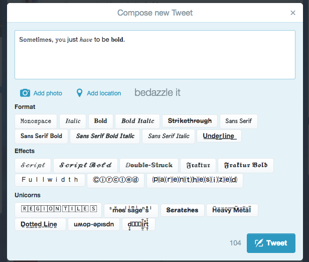

With Bedazzle, you can write "rich text" on Twitter!
Kinda, sorta, but not really. More like faux rich text via unicode.
Bedazzle is a Chrome extension which adds unicode transforming functions to your Tweet editor on twitter.com
It's based nearly entirely on unicate, which was created by Andrew Filer (@afiler).